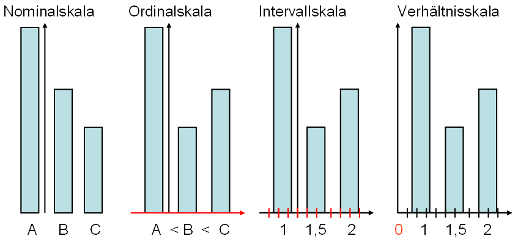
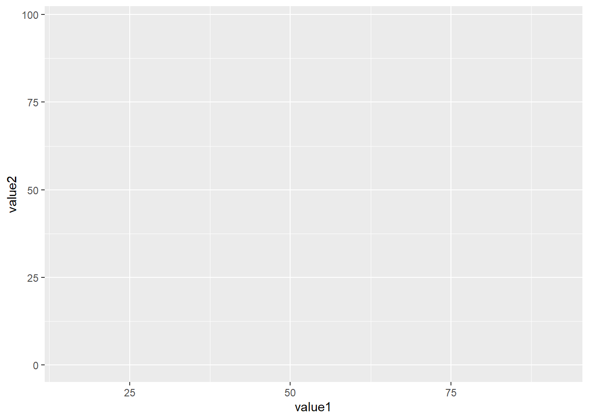
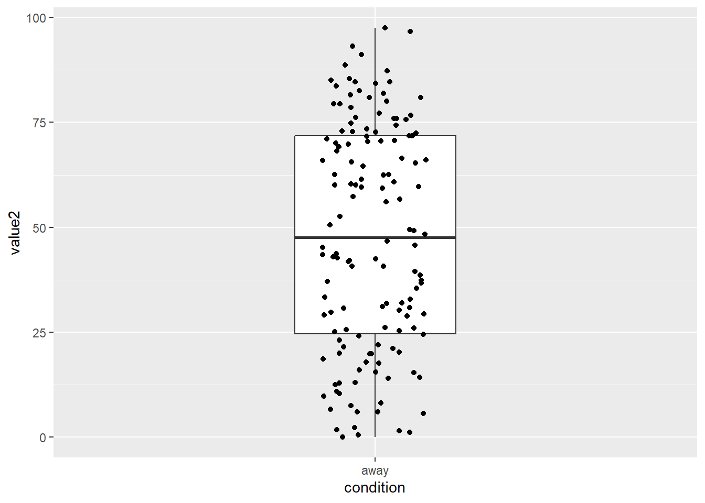
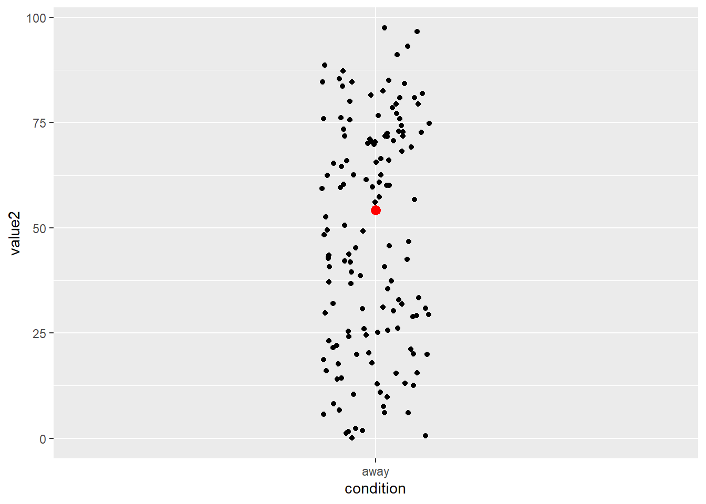
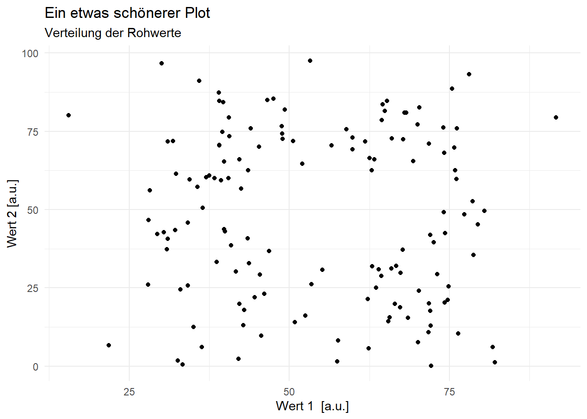
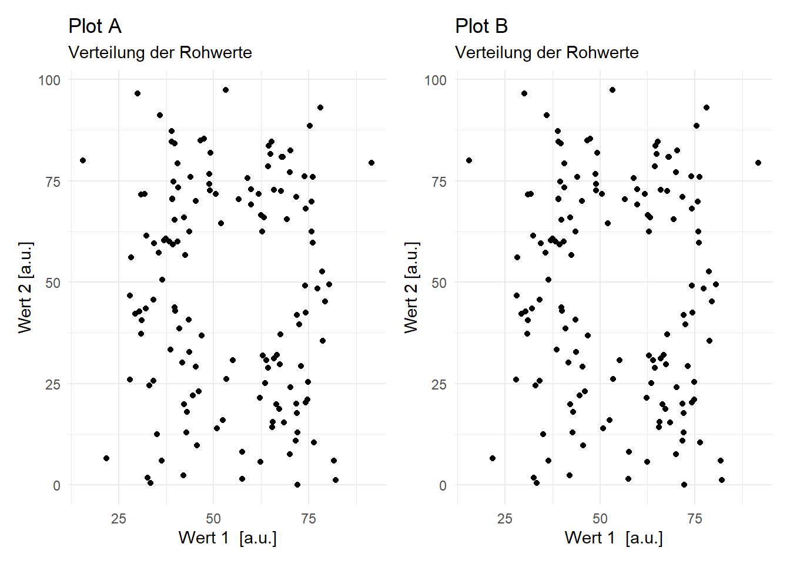
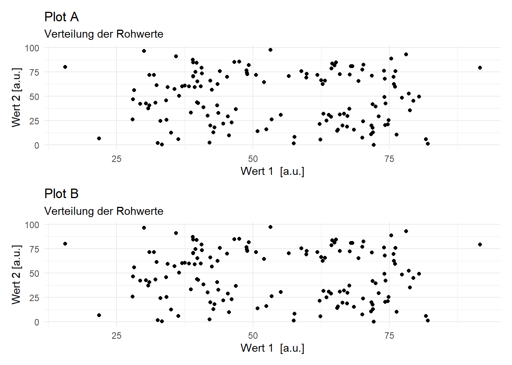
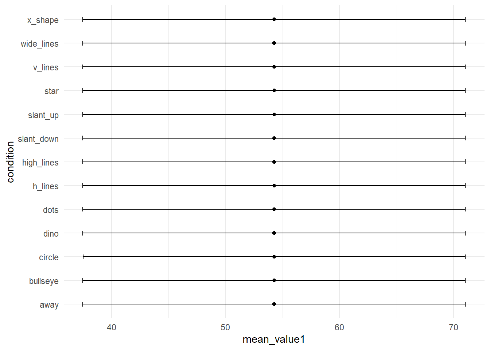
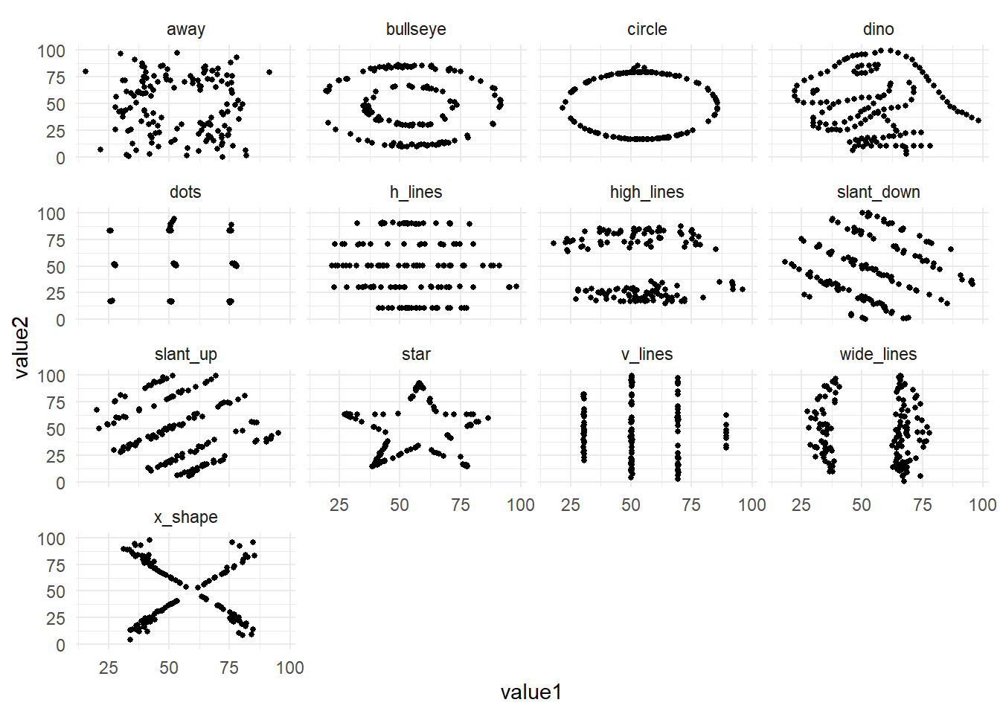

library(tidyverse)Datenvisualisierung mit {ggplot2}
CautionHands-on: Vorbereitung
- Erstellen Sie ein RProject in R. Benennen Sie es passend.
- Laden Sie den Datensatz hier herunter und speichern Sie diesen in dem Ordner
dataim Ordner Ihres RProjects. - Öffnen Sie ein neues RScript (
.R) oder RMarkdown-File (.Rmd).
Das gg im Package {ggplot2} und der Funktion ggplot() steht für Grammar of Graphics. Diese besagt, dass alle Grafiken aus definierten Komponenten zusammengesetzt werden können und sich damit vollständig beschreiben lassen. Das Kennen dieser Komponenten macht den anfangs oft etwas unintuitiven Aufbau von {ggplot2} verständlicher.
Eine Grafik enthält mindestens folgende 3 Komponenten:
Daten
Geome: sichtbare Formen (aesthetics), z.B. Punkte, Linien oder Boxen.
Koordinatensystem/Mapping: Verbindung von Daten und Geomen.
Weitere optionale Komponenten sind:
Statistische Parameter
Positionen
Koordinatenfunktionen
Facets
Scales
Themes
In dieser Einführung wird auf die ersten drei Komponenten, sowie auf Facets und Themes eingegangen.
Beim Laden des Packages tidyverse wird automatisch das Package {ggplot2} geladen.
Daten
Die wichtigste Komponente einer Grafik sind die Daten. Bevor eine Grafik erstellt wird, müssen die Eigenschaften des Datensatzes bekannt sein.
# Einlesen des Datensatzes
d <- read.csv("data/DatasaurusDozen.csv") %>%
mutate(condition = as.factor(condition)) # Variable condition zu Faktor konvertieren
# Datensatz anschauen
glimpse(d)Rows: 1,846
Columns: 3
$ condition <fct> away, away, away, away, away, away, away, away, away, away, …
$ value1 <dbl> 32.33111, 53.42146, 63.92020, 70.28951, 34.11883, 67.67072, …
$ value2 <dbl> 61.411101, 26.186880, 30.832194, 82.533649, 45.734551, 37.11…Datenformat
Am einfachsten ist das Plotten mit ggplot(), wenn die Daten im long-Format vorliegen. Das bedeutet:
Jede Variable die gemessen/erhoben wird, hat eine Spalte (z.B. Versuchspersonennummer, Reaktionszeit, Taste).
Jede Messung hat eine Zeile. (In unserem PsychoPy-Experiment entspricht dies einer Zeile pro Trial.)
Die hier eingelesenen Daten sind schon im long-Format.
Variablen
Für die Grafik ist es relevant, welches Skalenniveau die zu visualisierenden Variablen haben. Je nach Anzahl Variablen und den entsprechenden Skalenniveaus eignen sich andere Grafik-Formate. Eine häufige Schwierigkeit beim Visualisieren der Daten ist, dass die Daten nicht das für den gewählten Plot passenden Skalenniveaus haben.

CautionHands-on: Datensatz anschauen
Schauen Sie sich den Datensatz an.
- Wie viele unterschiedliche Variablen gibt es?
- Wie heissen die Variablen?
- Welches Skalenniveau haben sie?
Subsetting
Wenn nur ein gewisser Teil der Daten visualisiert werden soll, muss der Datensatz gefiltert werden. Der aktuelle Datensatz enthält beispielsweise verschiedene Bedingungen, jeweils mit Werten für Variable value1 und value2. Folgende 13 Bedingungen sind enthalten:
unique(d$condition) [1] away bullseye circle dino dots h_lines
[7] high_lines slant_down slant_up star v_lines wide_lines
[13] x_shape
13 Levels: away bullseye circle dino dots h_lines high_lines ... x_shapeFürs erste entscheiden wir uns für die Bedingung away.
d_away <- d %>%
filter(condition == "away")Wir können für diese Bedingung zusätzlich summary statistics berechnen, hier Mittelwert und Standardabweichung.
d_away_summary <- d_away %>%
summarise(mean_value1 = mean(value1),
sd_value1 = sd(value1),
mean_value2 = mean(value2),
sd_value2 = sd(value2))
glimpse(d_away_summary)Rows: 1
Columns: 4
$ mean_value1 <dbl> 54.2661
$ sd_value1 <dbl> 16.76982
$ mean_value2 <dbl> 47.83472
$ sd_value2 <dbl> 26.93974Diese Werte geben einen Anhaltspunkt, in welchem Bereich sich die Werte bewegen werden.
Plot
In den folgenden Beispielen werden die Daten der Bedingung away verwendet. Als erstes Argument wird der Funktion ggplot() der Datensatz übergeben (data = data_away).
ggplot(data = d_away)
Mapping
Das mapping beschreibt, welche Variable auf der X- und Y-Achse abgetragen werden sollen. Es wird also definiert, wie die Variablen auf die Formen (aesthetics) gemappt werden sollen. Am einfachsten wird dies zu Beginn in festgelegt (das mapping kann aber auch in der Funktion geom_ selbst definiert werden). Weitere Variablen könnten als Argumente z.B. unter group = ... oder color = ... eingefügt werden.
ggplot(data = d_away,
mapping = aes(x = value1,
y = value2)) 
Die Grafik verfügt nun über Achsen, diese werden automatisch mit den Variablennamen beschriftet. Da noch keine Formen (geoms) hinzugefügt wurde ist die Grafik in der Mitte aber leer.
Geom / Formen
Als dritte Komponente wird in ggplot() die Form mit geom_ hinzugefügt. Jede Form, die eingefügt wird, benötigt Angaben zum mapping. Falls kein mapping angegeben wird, wird dieses aus der ggplot()-Funktion in der ersten Zeile übernommen.
Es stehen viele verschiedene Formen zur Auswahl. Beispielsweise werden mit geom_point() Punkte erstellt, mit geom_line() Linien, mit geom_boxplot Boxplots, usw. Bei der Wahl der passenden Form kommt es einerseits auf die Daten an. Sind die Daten z.B. Faktoren oder numerische Werte (siehe auch Skalenniveau oben)? Wie viele Variablen werden gleichzeitig in die Grafik eingebunden? Andererseits ist es wichtig, was mit der Grafik gezeigt werden soll: Unterschiede? Gemeinsamkeiten? Veränderungen über Zeit?
Geome zur Visualisierung von Datenpunkten und Verläufen:
- Punkte / Scatterplots -
geom_point() - Linien -
geom_line()
Geome zur Visualisierung von zusammenfassenden Werten:
- Histogramme -
geom_histogram() - Mittelwerte und Standardabweichungen -
geom_pointrange() - Dichteplots -
geom_density() - Boxplots -
geom_boxplot() - Violinplots -
geom_violin()
CautionHands-on: Geoms
Welche geoms eignen sich für welches Skalenniveau und welche Variablenanzahl?
Tipps:
- Schauen Sie sich den Datensatz mit
glimpse(),head()odersummary()an. - Schauen Sie sich die verschiedenen Formen von Plots hier an.
Kombinieren von mehreren geoms in einer Grafik
Teilweise werden in Visualisierungen mehrere geoms kombiniert. In vielen Fällen macht es beispielsweise Sinn, nicht nur die Rohwerte oder Werte für jedes Subjekt, sondern in derselben Grafik auch zusammenfassende Masse, z.B. einen Boxplot, zu visualisieren.
Verwenden verschiedener geoms in einem Plot:
ggplot(data = d_away,
mapping = aes(x = condition,
y = value2)) +
geom_boxplot(width = 0.3) +
geom_jitter(width = 0.1) 
Kombiniert werden können aber nicht nur verschiedene Formen, sondern auch mehrere Datensätze. Dies kann in ggplot() einfach umgesetzt werden indem mehrere Geoms übereinandergelegt werden und nicht das mapping aus der ggplot()-Funktion genutzt wird. Stattdessen wird für jedes geom ein separater Datensatz und ein separates mapping spezifiziert.
ggplot(data = d_away,
mapping = aes(x = condition,
y = value2)) +
geom_jitter(width = 0.1) + # verwendet Datensatz "d_away"
geom_point(data = d_away_summary, # verwendet Datensatz "d_away_summary"
aes(x = "away", y = mean_value1), # condition ist nicht im Datensatz enthalten, deshalb hier hardcoded
color = "red", # Punkt rot einfärben
size = 3) # Punkt vergrössern
Beschriftungen und Themes
Schönere und informativere Plots lassen sich gestalten, wenn wir einen Titel hinzufügen, die Achsenbeschriftung anpassen und das theme verändern:
ggplot(data = d_away,
mapping = aes(x = value1,
y = value2)) +
geom_point() +
labs(title = "Ein etwas schönerer Plot",
subtitle = "Verteilung der Rohwerte",
x = "Wert 1 [a.u.]",
y = "Wert 2 [a.u.]") +
theme_minimal()
CautionHands-on
Erstellen Sie eine Grafik.
Fügen Sie mit
labs()passende Beschriftungen hinzu. Gibt es noch weitere, oben nicht verwendete Optionen?Wechseln Sie das
theme. Welches gefällt Ihnen am besten?theme_bw()theme_classic()theme_dark()- … (schreiben Sie
theme_und drücken SieTab, um weitere Vorschläge zu sehen.)
Daten plotten: Tipps und Tricks
CautionHands-on: Informative Grafik erstellen
Im Folgenden können Sie den Datensatz mit Grafiken erkunden.
Sie können entweder in Ihrem RScript / RMarkdown weiterarbeiten oder Sie können ein GUI (graphical user interface) verwenden, dass für Sie den Code schreibt.
Welche
geom_s/Formen eignen sich gut für diesen Datensatz?Welche Abbildungen können alle 3 Variablen des Datensatzes berücksichtigen?
Wie kann man Bedingungen miteinander vergleichen?
Wie können Grösse und Farbe der
geom_s bestimmt werden?Wie passt man Schriftgrössen an?
Können Sie eine Grafik speichern?
Lassen Sie sich den Code direkt ins RScript / RNotebook einfügen und verändern Sie den Code dort weiter.
Daten plotten mit esquisser()
Um in RStudio ein GUI für das Datenvisualisieren zu verwenden, kann das Package {esquisse} genutzt werden.
Installieren Sie das Package {esquisse} mit
install.packages("esquisse")in der Konsole oder überTools>Install packages...Geben Sie in Ihrer Konsole
esquisse::esquisser()ein und wählen Sie dann unterImport Dataden schon eingelesenen DatensatzDatasaurusDozen.csvaus.
Mehrere Plots in einer Grafik darstellen
Dies können Sie mit dem Package {patchwork} sehr einfach machen.
library(patchwork)
p1 <- ggplot(data = d_away,
mapping = aes(x = value1,
y = value2)) +
geom_point() +
labs(title = "Plot A",
subtitle = "Verteilung der Rohwerte",
x = "Wert 1 [a.u.]",
y = "Wert 2 [a.u.]") +
theme_minimal()
p2 <- ggplot(data = d_away,
mapping = aes(x = value1,
y = value2)) +
geom_point() +
labs(title = "Plot B",
subtitle = "Verteilung der Rohwerte",
x = "Wert 1 [a.u.]",
y = "Wert 2 [a.u.]") +
theme_minimal()
p1 + p2
Oder auch untereinander
p1 / p2
Grafik abspeichern
Eine Grafik lässt sich abspeichern unter dem Reiter Plots > Export oder mit der Funktion ggsave().
Wieso ist Plotten so wichtig?
Studiendaten können wichtige Informationen enthalten, die ohne Grafiken übersehen werden können (vgl. Rousselet, Pernet und Wilcox, 2017). Das Visualisieren der Rohdaten kann Muster zum Vorschein bringen, die durch statistische Auswertungen nicht sichtbar sind. Die Wichtigkeit von Datenvisualisierung für das Entdecken von Mustern in den Daten zeigte Francis Anscombe 1973 mit dem Anscombe’s Quartet. Dies diente als Inspiration für das Erstellen des “künstlichen” Datensatzes DatasaurusDozen, welchen wir in der letzten Veranstaltung visualisiert haben. Verschiedene Rohwerte, können dieselben Mittelwerte, Standardabweichungen und Korrelationen ergeben. Nur wenn man die Rohwerte plottet erkennt man, wie unterschiedlich die Datenpunkte verteilt sind.
Dies wird ersichtlich, wenn wir die Mittelwerte und Standardabweichungen für jede Gruppe berechnen und plotten:
# load DatasaurusDozen dataset
dino_data <- read.csv("data/DatasaurusDozen.csv") %>%
mutate(condition = as.factor(condition))
# Plot mean and standard deviation for value 1 per condition
dino_data |>
group_by(condition) |>
summarise(mean_value1 = mean(value1),
sd_value1 = sd(value1)) |>
ggplot(mapping = aes(x = mean_value1,
y = condition)) +
geom_point() +
geom_errorbar(aes(xmin = mean_value1 - sd_value1,
xmax = mean_value1 + sd_value1),
width = 0.2) +
theme_minimal()
Und dann die Rohwerte visualisieren:
# Plot raw values
dino_data |>
ggplot(aes(x = value1, y = value2)) +
geom_point(size = 1) +
facet_wrap(~condition) +
theme_minimal()
Hier sehen Sie das Ganze animiert:

Inspiration
Grafiken für verschiedene Datenarten: From Data to Viz
Simple bis crazy Chartideen: R Charts: Ggplot
Farben für Grafiken: R Charts: Colors, noch mehr Farben
Weiterführende Ressourcen zur Datenvisualisierung mit ggplot()
Dokumentation von
ggplot2Kurzweilige, kompakte und sehr informative Informationen und Videos über das Erstellen von Grafiken in
ggplotfinden Sie hier: Website PsyTeachR: Data Skills for reproducible researchHier ist der Start der PsyTeachR Videoliste von Lisa deBruine, dort finden sich auch hilfreiche Kurzvideos zu Themen von Daten einlesen bis zu statistischen Analysen. Beispielsweise zu Basic Plots, Common Plots und Plot Themes and Customization
Einführung in R von Andrew Ellis und Boris Mayer
References
Matejka, Justin, and George Fitzmaurice. 2017. “Same Stats, Different Graphs: Generating Datasets with Varied Appearance and Identical Statistics Through Simulated Annealing.” In Proceedings of the 2017 CHI Conference on Human Factors in Computing Systems, 1290–94. Denver Colorado USA: ACM. https://doi.org/10.1145/3025453.3025912.